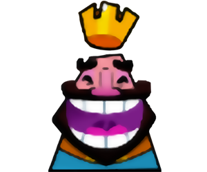

Emote 4 : le roi content
voici comment faire le légendaire 'hihihiha' du roi qui est content:

voici les étapes pour que vous puissez maitriser cette emote:
- entrainez vous a sourire
- prononcez le premier 'hi'
- faites de même pour les deux prochains
- assemblez les
- rajoutez le 'ha'
- faites toutes les etapes en même temps
vous pouez aussi retrouver d'autres tutos:
tuto emote pouce levés
tuto emote roi triste
tuto emote roi enervé
page secrete